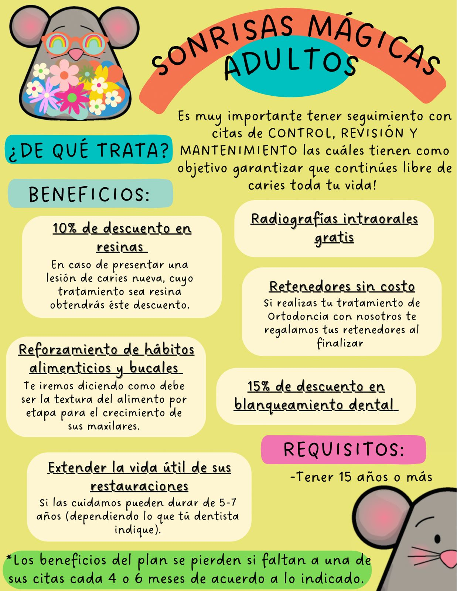
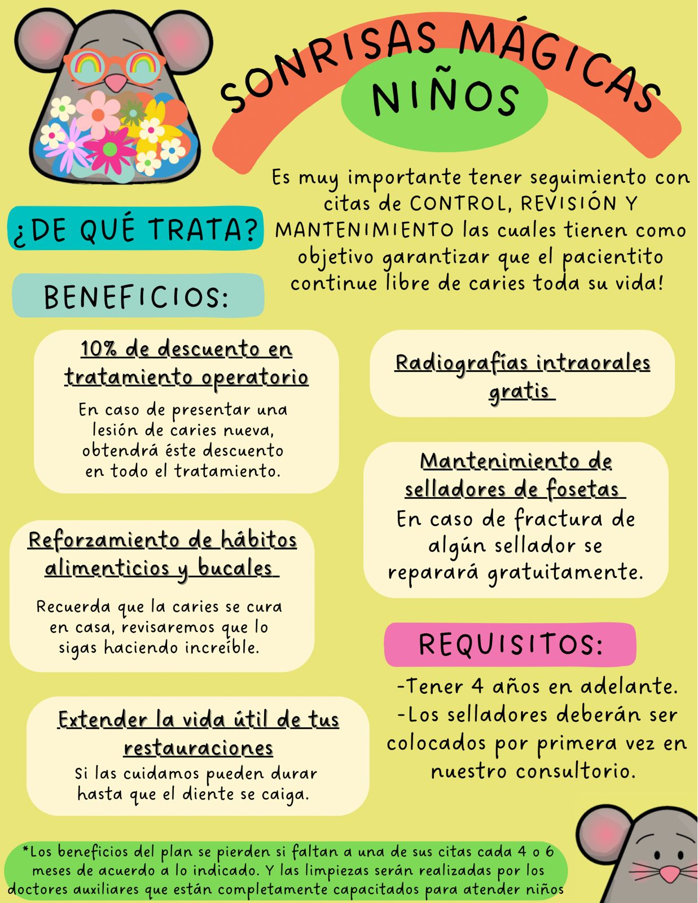
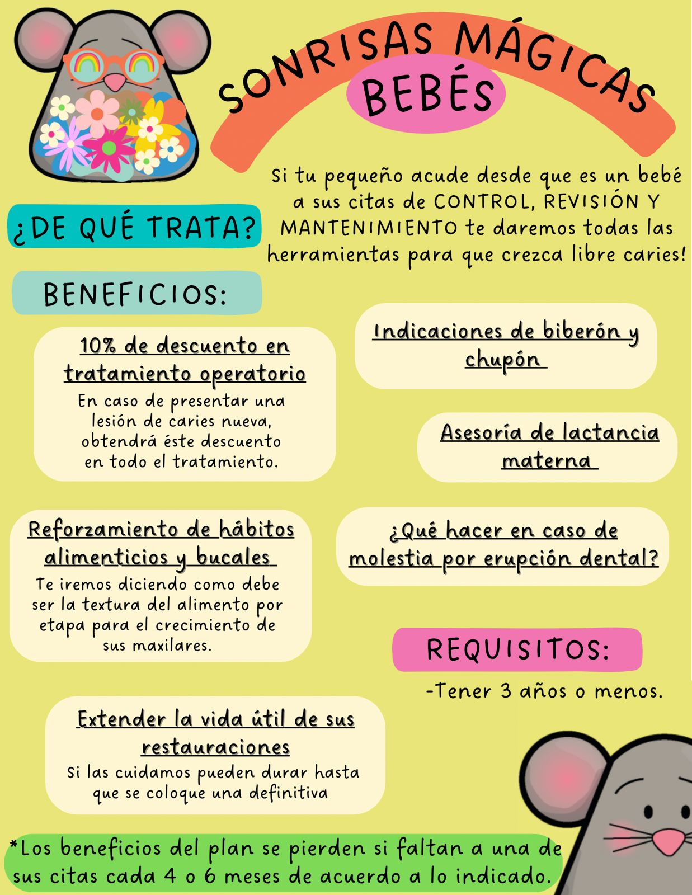

¡El club donde cuidar tus dientes se convierte en una gran aventura de premios!
Es nuestro exclusivo programa de prevención y motivación diseñado para que los niños crezcan libres de caries. Premiamos la constancia de los pequeños y el compromiso de los papás en acudir puntualmente a sus citas preventivas de mantenimiento bucodental.

Cada 6 meses realizamos una profilaxis profunda (limpieza) y aplicamos flúor de alta calidad para mantener sus esmaltes súper fuertes y protegidos contra bacterias.

¡El esfuerzo merece una gran recompensa! Al finalizar su consulta con una excelente higiene y sin caries, los pequeños eligen un juguete sorpresa de nuestro mágico cofre.

¡Celebramos a los campeones de la higiene! Si el pequeño está libre de caries, colocamos su foto en nuestro gran mural de honor y le entregamos un certificado oficial de súper sonrisa.
💡 Tip: Puedes hacer clic en cualquiera de las imágenes de arriba para verlas ampliadas en grande.
Llama o escríbenos para agendar su valoración inicial de odontopediatría preventiva y profilaxis.
Te entregaremos un divertido pasaporte del club. Colocaremos estampitas en cada cita de mantenimiento superada con éxito.
Mantén tus citas periódicas semestrales, junta tus estampas y canjéalas por súper premios adicionales y diplomas estrella.
¡El ingreso al club es totalmente gratuito! El único requisito es ser paciente de la clínica y agendar formalmente sus citas de mantenimiento preventivo (profilaxis y flúor) cada 6 meses (o según lo indique nuestro especialista).
Desde la aparición de su primer diente (generalmente alrededor de los 6 meses de edad). Entre más temprano iniciemos con la prevención y desensibilización dental, más fácil será lograr que crezcan completamente libres de caries.
¡No te preocupes! Primero realizamos la restauración de sus dientitos con mucho cuidado y técnicas sin dolor. Una vez rehabilitado y con su boquita sana, ingresa formalmente al Club para iniciar su registro preventivo y asegurar que no vuelvan a aparecer caries.
Dale a tu hijo el mejor regalo: el hábito de cuidar su salud y una experiencia positiva con el dentista que le durará toda la vida. Escríbenos hoy mismo.
✨ ¡Registrar a mi pequeño en el Club!